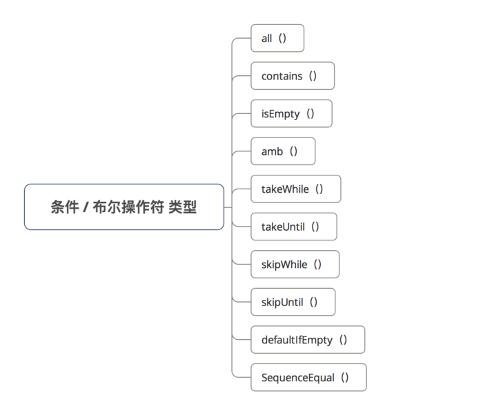
all( )
作用
判断发送的每项数据是否都满足 设置的函数条件
若满足，返回 true；否则，返回 false
1 | Observable.just(1, 2, 3, 4, 5, 6) |
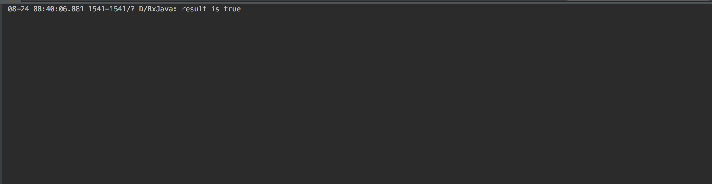
takeWhile( )
作用
判断发送的每项数据是否满足 设置函数条件
若发送的数据满足该条件，则发送该项数据；否则不发送
1 | // 1. 每1s发送1个数据 = 从0开始，递增1，即0、1、2、3 |
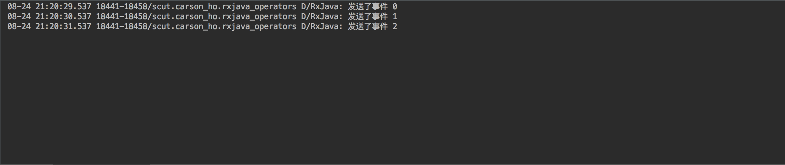
skipWhile( )
作用
判断发送的每项数据是否满足 设置函数条件
直到该判断条件 = false时，才开始发送Observable的数据
1 | // 1. 每隔1s发送1个数据 = 从0开始，每次递增1 |
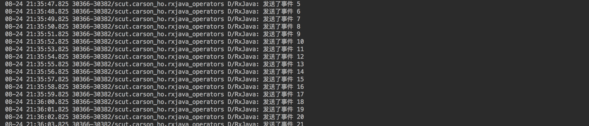
takeUntil( )
作用
执行到某个条件时，停止发送事件
1 | // 1. 每1s发送1个数据 = 从0开始，递增1，即0、1、2、3 |
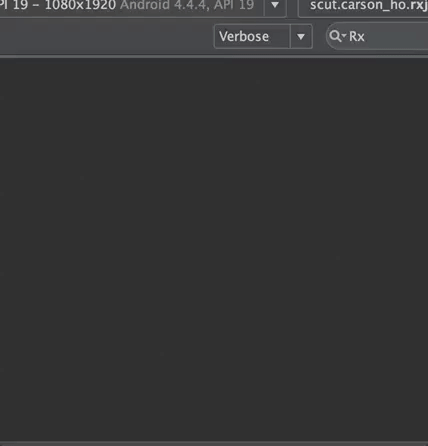
skipUntil( )
作用
等到 skipUntil()传入的Observable开始发送数据，（原始）第1个Observable的数据才开始发送数据
1 | // （原始）第1个Observable：每隔1s发送1个数据 = 从0开始，每次递增1 |
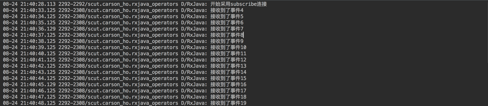
SequenceEqual( )
作用
判定两个Observables需要发送的数据是否相同
若相同，返回 true；否则，返回 false
1 | Observable.sequenceEqual( |
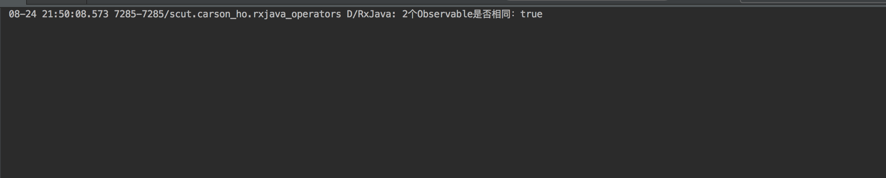
contains( )
作用
判断发送的数据中是否包含指定数据
若包含，返回 true；否则，返回 false
内部实现 = exists（）
1 | Observable.just(1, 2, 3, 4, 5, 6) |
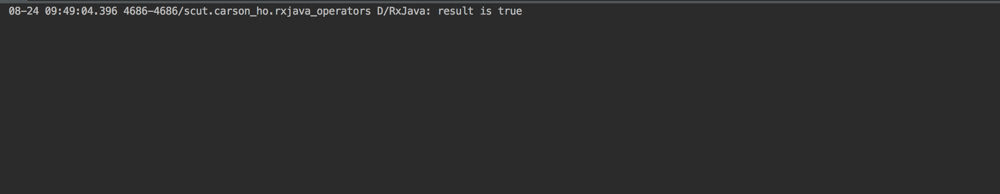
isEmpty( )
作用
判断发送的数据是否为空
若为空，返回 true；否则，返回 false
1 | Observable.just(1, 2, 3, 4, 5, 6) |
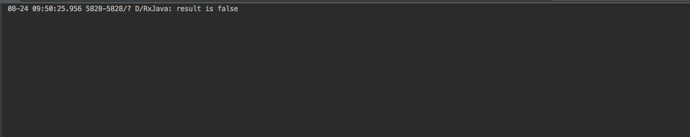
amb( )
作用
当需要发送多个 Observable时，只发送 先发送数据的Observable的数据，而其余 Observable则被丢弃。
1 | // 设置2个需要发送的Observable & 放入到集合中 |
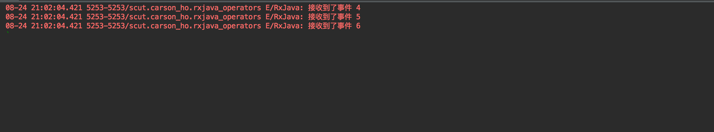
defaultIfEmpty( )
没啥用
总结
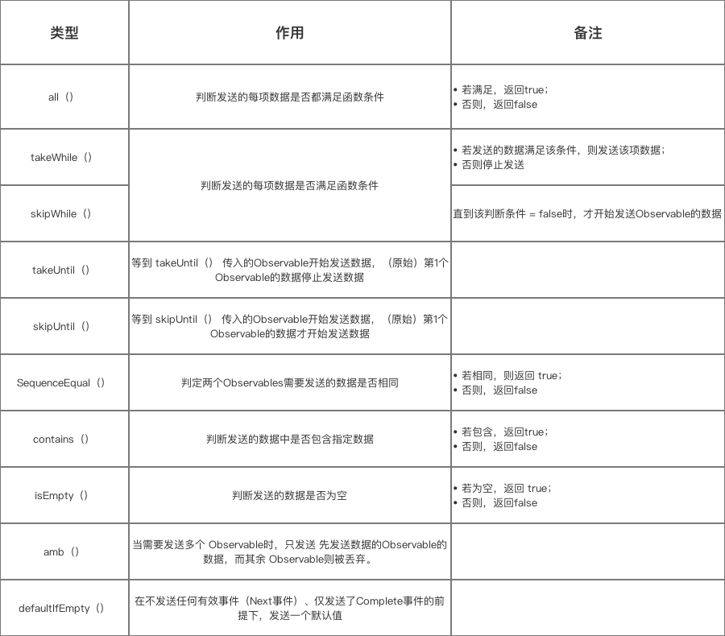